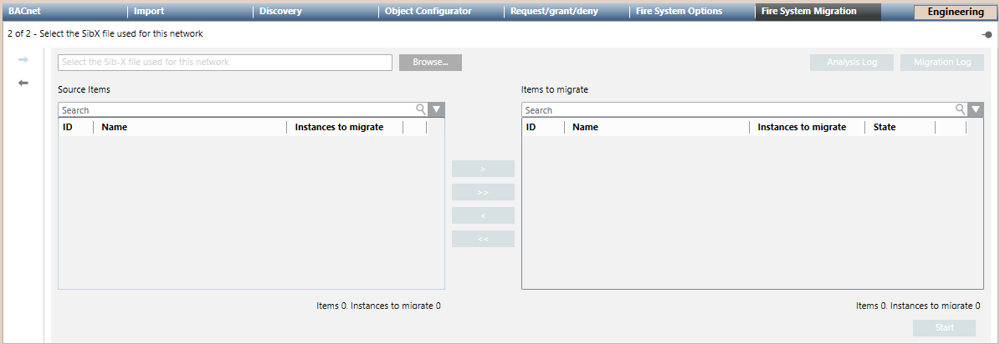

Migrating CS11 AlgoRex to FS20
Scenario
You want to migrate an existing CS11 AlgoRex system, fully configured in Desigo CC, to a new FS20 system that reuses the existing detection lines.
The migration procedure can automatically arrange the fire object references in the Desigo CC configuration.
For background information, see the reference section.
Prerequisites
- The Legacy systems via NK8000 extension is installed and included in the active project.
- The Danger Management Common extension is installed and included in the active project.
- The CS11 AlgoRex you want to migrate is fully configured in Desigo CC.
- The FS20 system has been configured to support the same fire objects as the CS11.
- You have the FS20 SiB-X file of this configuration, which must include the Legacy Address tags.
NOTE: In the FS20 configuration tool, make sure to follow the migration procedure and create the SiB-X file in migration mode (do not select Remove Import Information before exporting the SiB-X file).
For detailed information, refer to the FS20 Configuration manual. - System Manager is in Engineering mode.
- System Browser is in Management View.
- You have full scope visibility of all objects involved in the reconfiguration (maps, macros, reactions, and so on, see CS11 AlgoRex To FS20 Migration Limits and Compatibility).
1 – Configure the FS20 Fire System
Before migrating the CS11 system, you need to configure the new FS20 system that will replace CS11.
Refer to the FS20 Configuration in Desigo CC:
- Configure the BACnet network and driver for the FS20 according to the new BACnet plan.
NOTE: You can have the FS20 connected on a different BACnet than the CS11 AlgoRex. - Import the FS20 SiB-X data into the BACnet network.
- Complete the FS20 BACnet configuration.
NOTE: Do not configure graphics, views and scopes with the new FS20 objects. - Take a project backup that can allow you to start again in case of migration errors.
2 – Run the Migration Procedure
- The same FS20 SiB-X file previously imported on the BACnet network is available locally or over the network.
- To speed configuration, make sure the Desigo CC Transaction Mode is set to
Simpleor the Automatic Switch of Transaction Mode is set toTrue.
The automatic switch setting is recommended. Without it, to re-enable the logs, you need to set the Transaction Mode toLoggingat the end of the configuration procedure.
- In System Browser, select Project > Field Networks > [BACnet Network].
NOTE: In case CS11 and FS20 are on different networks, select the BACnet network where the new FS20 is connected. - Page 1 of 2 displays: Select the types of panels involved in the migration.
- In Migration Types, select CC11 to FS20.

- Click
 to proceed to the next page.
to proceed to the next page. - Page 2 of 2 displays: Select the SiB-X file used for this network.
- In the Fire System Migration tab, click Browse and select the SiB-X file.
- Based on the information in the SiB-X file, the system looks for the corresponding CS11 systems. The Analysis Log button becomes available to show the check log.
For information about the log files, see the reference section. - If the configuration file is valid and one or more CC11 panels are found, the panels to migrate display in the Source Items list indicating the number of corresponding fire objects found.
- In the Source Items list, select a panel and click the single selection button
 .
.
Click to select all panels.
to select all panels. - The selected panels are moved to the Items to Migrate list.
- Click Start.
- The migration procedure replaces old CS11 objects with FS20 objects in all applicable cases (see CS11 AlgoRex To FS20 Migration Limits and Compatibility).
- The Migration Log button becomes available to show the import log.
- Click Migration Log and save the log file for future reference.
For information about the log files, see the reference section. - If necessary, repeat the steps above for other FS20 SiB-X files.

3 – Complete the FS20 Configuration
Check Commands
Be aware that the migration of control commands from AlgoRex may not result in exactly the same behavior for FS20. Therefore, after migrating, you must check in the log file for correctness of the migration in all of the following elements.
- In-graphic commands, where the target object may or may not have the correct property and command.
- Macros, where the target object may or may not have the correct properties and commands.
- Reactions, where the target object may or may not have the correct properties and commands.
The log file indicates … check properties and commands alongside the affected items (map, macros or reactions).
Manually Replace Non-migrated References
In Desigo CC elements that are not migrated, you need to substitute the references to fire objects manually. Refer to CS11 AlgoRex To FS20 Migration Limits and Compatibility.
Remove CS11 and NK823x
The migration procedure does not remove the CS11 system and the NK823x adapter from Desigo CC. You can remove them manually as follows:
- In System Browser, select Project > Field Networks > [BACnet Network].
- Remove the CC11 and CK11 objects, and then the CS11 object, by selecting them in turn and clicking Delete
 .
. - If the NK823x adapter is no longer used, select it and click Delete .
- If the BACnet network is longer required, select [BACnet network], the BACnet tab and click Delete .